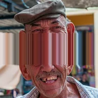

Segment uitrekken

Snijdt de laag langs een lijn en trekt de twee helften uit elkaar, waarbij de pixels op de lijn de opening opvullen.
Instellingen
| Instelling | Type | Bereik | Standaard |
|---|---|---|---|
| Hoek | Hoek | -360° tot 360° | 0° |
| Uitrekken | Getal | 0 tot 5000 | 10 |
| Verschuiving | Getal | -5000 tot 5000 | 0 |
| Spreiding | Getal | 0 tot 500 | 0 |
| Meten in laaggrootte | Aan of uit | – | Uit |